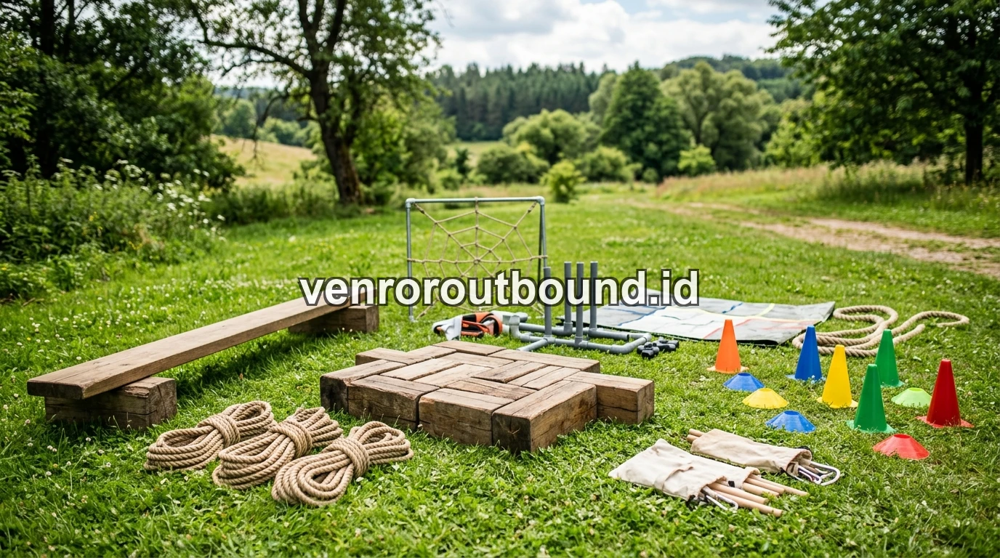

1. Memahami Hakikat Class Meeting dan Outbound Pelajar
Outbound pelajar lebih efektif membangun karakter dibanding class meeting biasa karena menggunakan metode experiential learning. Di sini siswa dihadapkan pada tantangan kelompok yang membutuhkan pemecahan masalah nyata, refleksi nilai, dan empati tanpa batasan persaingan antar kelas semata.
Menjelang penutupan semester atau setelah ujian sumatif berakhir, pihak kesiswaan dan pembina OSIS selalu dihadapkan pada agenda jeda semester. Pertanyaan strategis yang sering muncul adalah: apakah cukup menggelar class meeting rutin di lingkungan sekolah, ataukah sekolah perlu mengagendakan kegiatan outbound pelajar di luar ruangan?
Untuk menjawabnya secara objektif, kita perlu memahami filosofi dasar keduanya. Class meeting lahir sebagai sarana penyaluran bakat olahraga dan hiburan internal antar kelas. Sedangkan outbound pelajar dirancang khusus sebagai instrumen pendidikan karakter berbasis alam yang terstruktur, di mana fokus utamanya bukan tentang siapa yang menang, melainkan bagaimana siswa berproses bersama mengatasi rintangan.

Membangun Karakter Pelajar di Luar Kelas: Manfaat Nyata Edukasi Outdoor
Ulasan mendalam mengenai peran penting pembelajaran di alam terbuka untuk menumbuhkan kemandirian generasi muda.
2. Perbedaan Fundamental Orientasi: Mental Kompetisi vs Sinergi Kolaboratif
Perbedaan paling mencolok antara class meeting dan outbound terletak pada dinamika psikologis yang ditanamkan ke dalam benak peserta didik:
- Class Meeting (Berbasis Rivalitas Olahraga): Setiap kelas mengirimkan perwakilan terbaiknya untuk memperebutkan gelar juara. Hal ini melatih sportivitas, namun tak jarang memicu friksi, ejekan antar kelas, atau rasa minder bagi siswa yang tidak mahir berolahraga.
- Outbound Pelajar (Berbasis Sinergi Lintas Kelas): Tim dibentuk secara heterogen dari berbagai kelas yang berbeda. Tidak ada lawan tanding di pihak lain; lawan sesungguhnya adalah rintangan simulasi yang hanya bisa dipecahkan jika semua anggota saling percaya dan bekerja sama.

Peralatan teamwork outdoor yang dirancang untuk mengasah komunikasi dan empati sosial antar siswa.
3. Tingkat Keterlibatan Siswa: Pasif Menonton vs 100% Terlibat Aktif
Salah satu kritik utama terhadap penyelenggaraan class meeting konvensional adalah ketimpangan partisipasi. Dari 30–40 siswa dalam satu kelas, biasanya hanya 5–10 siswa atlet yang aktif bertanding di lapangan, sementara sisanya hanya menjadi penonton pasif di pinggir lapangan atau bahkan memilih bermain ponsel.
Sebaliknya, dalam program outbound pelajar:
- Keterlibatan Total: Format games mewajibkan setiap individu mengambil peran, mulai dari navigator, pemegang tali, penyusun strategi, hingga penyemangat tim.
- Tidak Bergantung pada Bakat Fisik: Simulasi logika dan kreativitas memberikan ruang bersinar bagi siswa yang memiliki kecerdasan intrapersonal, analitis, dan komunikasi.
- Sesi Debriefing Bernilai: Setiap game diakhiri dengan evaluasi fasilitator yang merangkum pelajaran hidup dari dinamika kelompok.
4. Tabel Matriks Komparasi Karakteristik & Dampak Siswa
| Parameter Komparasi | Class Meeting Sekolah | Outbound Pelajar Karakter |
|---|---|---|
| Lokasi Pelaksanaan | Lapangan / Aula Sekolah | Outdoor Camp / Area Wisata Alam |
| Fokus Pembelajaran | Bakat olahraga & rekreasi | Character building & kolaborasi tim |
| Partisipasi Peserta | Terbatas pada atlet kelas | 100% siswa aktif tanpa terkecuali |
| Penyegaran Mental | Sedang (lingkungan tetap sama) | Tinggi (suasana alam baru yang asri) |
| Pemandu & Fasilitasi | Pengurus OSIS & Wasit Guru | Fasilitator Bersertifikasi BNSP |
5. Model Sinergi Hybrid: Mengombinasikan Class Meeting dan Outbound
Sekolah tidak harus memilih salah satu dan meniadakan yang lain. Pendekatan terbaik yang banyak diadopsi oleh sekolah-sekolah unggulan adalah Skema Sinergi Hybrid:
- Hari 1–2 (Class Meeting di Sekolah): Menggelar turnamen seni dan olahraga internal antar kelas untuk membakar semangat sportivitas di sekolah.
- Hari ke-3 (Puncak Character Building di Alam): Mengajak seluruh siswa keluar sekolah untuk mengikuti 1 hari Outbound Character Building. Seluruh sekat persaingan antar-kelas dilebur menjadi satu rasa kekeluargaan satu almamater.

Paket Outbound Sekolah Karakter Edukatif & Terlengkap 2026
Rincian modul, fasilitas safety, dan simulasi biaya pengadaan paket outbound sekolah all-in.
Ingin Konsultasi Konsep Outbound untuk Sekolah Anda?
Dapatkan proposal penawaran khusus program outbound sekolah di +62 82211221909 lengkap dengan rincian rundown, simulasi games, dan rekomendasi venue.
Hubungi Kami via WhatsAppPertanyaan Sering Diajukan (FAQ)

Arby Ardiansyah
Praktisi pengembangan SDM dan perancang program experiential learning dengan pengalaman lebih dari 8 tahun memfasilitasi ratusan kegiatan outbound korporat, BUMN, dan institusi pendidikan di seluruh Jawa Timur.